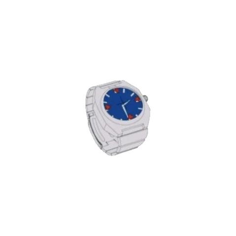
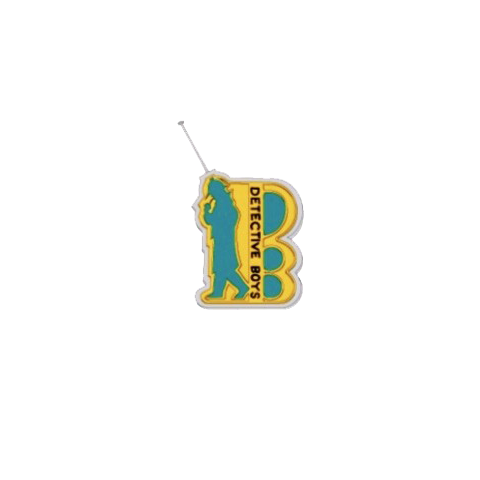
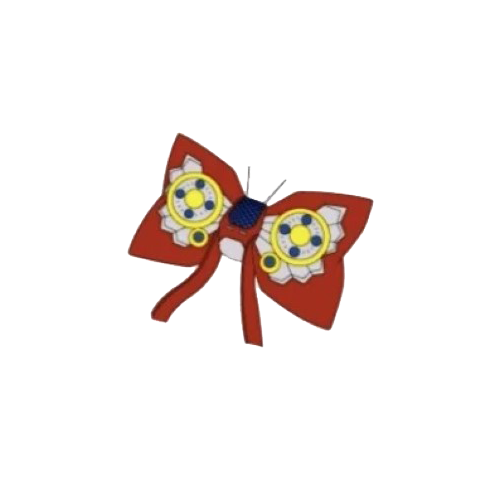
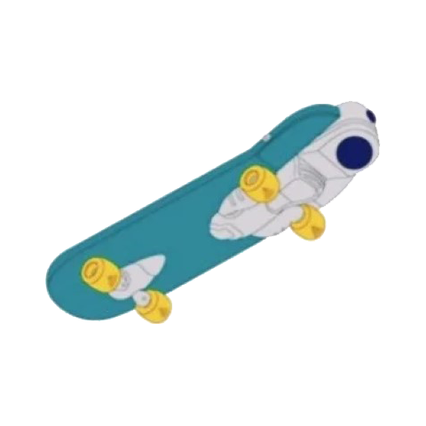
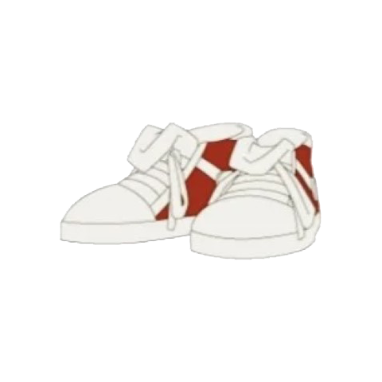
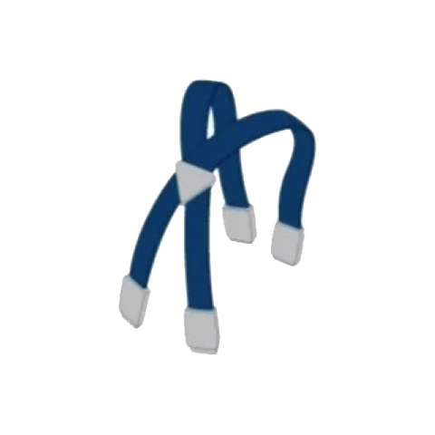
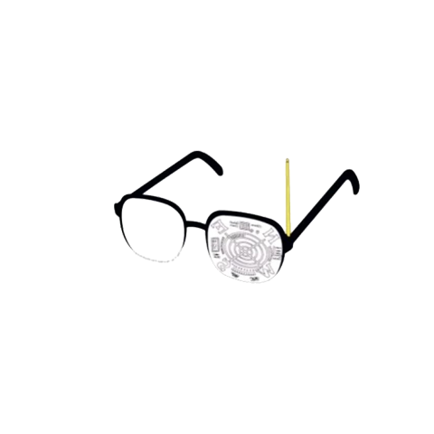

手表型麻醉枪
这是个只要按下开关就会飞出麻醉针让人瞬间沉睡的道具。由于只有一根针，所以机会只有一次。主要在新一以小五郎的音色推理揭露犯人时使用，有时也用作逮捕犯人的武器。麻醉针是环保材料。

少年侦探团徽章
这是内置了无线电收发器的徽章。用于DB（Detective Boys），即少年侦探团成员间的交流。拥有与犯人追踪眼镜联动的发信机能。

蝴蝶结型变声器
这是可以通过调节领结背面的拨号盘以自如变换音色的道具。右侧的拨号盘调节音程，左侧的拨号盘调节音量。顺便一提，小五郎的声音是59号。

带有涡轮引擎的滑板
这是组装有超高性能的太阳能板和电池的滑板。白天充电的话在夜间也可使用30分钟。即使载上新一、元太、光彦三人（总重量78千克）也无需担心，拥有能追踪轿车程度的马力。

脚力增强鞋
这是通过电力和磁力刺激脚部穴位，提高肌肉力量至极限的道具。若被穿着这双鞋踢出的球击中，犯人会不堪一击。是擅长足球的新一的必杀武器。

伸缩吊带
这是使用织入了特殊形状记忆材料的纤维制成的背带。按下按钮进行伸缩，可以轻松举起以小孩子的力量无法移动的东西。

犯人追踪眼镜
可以确定发信器周围20千米以内的地点。镜框左侧有天线，左镜片会变成显示器。充电式，有窃听机能。发信器是贴纸，新一总是将其带在衣服纽扣上。现在有备用眼镜。